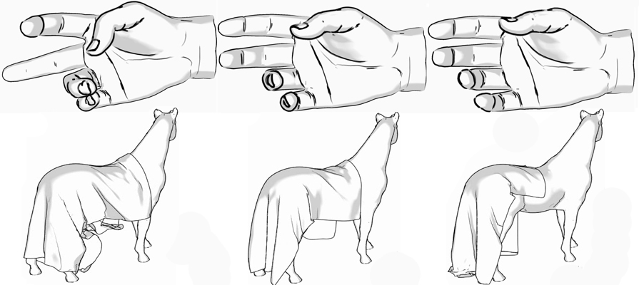
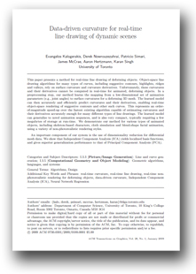

Data-driven curvature for real-time line drawing
People
Abstract
This paper presents a method for real-time line drawing of deforming objects. Object-space line drawing algorithms for many types of curves, including suggestive contours, highlights, ridges and valleys, rely on surface curvature and curvature derivatives. Unfortunately, these curvatures and their derivatives cannot be computed in real-time for animated, deforming objects. In a preprocessing step, our method learns the mapping from a low-dimensional set of animation parameters (e.g., joint angles) to surface curvatures for a deforming 3D mesh. The learned model can then accurately and efficiently predict curvatures and their derivatives, enabling real-time object-space rendering of suggestive contours and other such curves. This represents an order- of-magnitude speed-up over the fastest existing algorithm capable of estimating curvatures and their derivatives accurately enough for many different types of line drawings. The learned model can generalize to novel animation sequences, and is also very compact, typically requiring a few megabytes of storage at run-time. We demonstrate our method for various types of animated objects, including skeleton-based characters, cloth simulation and blend-shape facial animation, using a variety of non-photorealistic rendering styles.

Paper
ddcurvature.pdf, 4.7MBCitations
Evangelos Kalogerakis, Derek Nowrouzezahrai, Patricio Simari, James McCrae, Aaron Hertzmann, Karan Singh, " Data-driven curvature for real-time line drawing of dynamic scenes", ACM Transactions on Graphics, Volume 28, Issue 1, January 2009
Bibtex
Presentation
ddcurvature_siggraph.zip, 21MB.
This archive contains the Siggraph 2009 presentation of our method. Unzip all the files (including the .wmv files) of the archive into the same folder so that the presentation plays the videos as well.
Video
This video presents the real-time line drawing results of our method.Acknowledgements
We thank Szymon Rusinkiewicz for providing his rtsc and trimesh2 code online. We also thank Robert Wang and Joel Anderson for providing us with animation test sequences, Michael Comet for the muscle arm model, Chris Landreth for the Angela dataset, Alexis Angelidis for the Master Pai mesh, Eitan Grinspun and Rony Goldenthal for the horse and draping cloth. We finally thank the anonymous reviewers for their insightful and helpful comments which greatly contributed to the clarity of the paper. The motion capture data used on the Fit and Master Pai datasets was obtained from the CMU Motion Capture database.
This work was funded by the Alfred P. Sloan Foundation, the Canada Foundation for Innovation (CFI), the Canadian Institute for Advanced Research (CIFAR), Microsoft Research, the National Sciences and Engineering Research Council of Canada (NSERC), the Ontario Ministry of Research and Innovation (MRI), the Ontario Ministry of Education and Training and the Canadian Research Network for Mathematics of Information Technology and Complex Systems (MITACS).